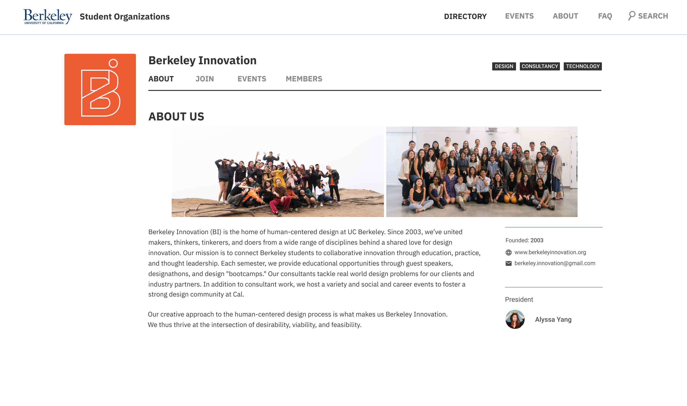
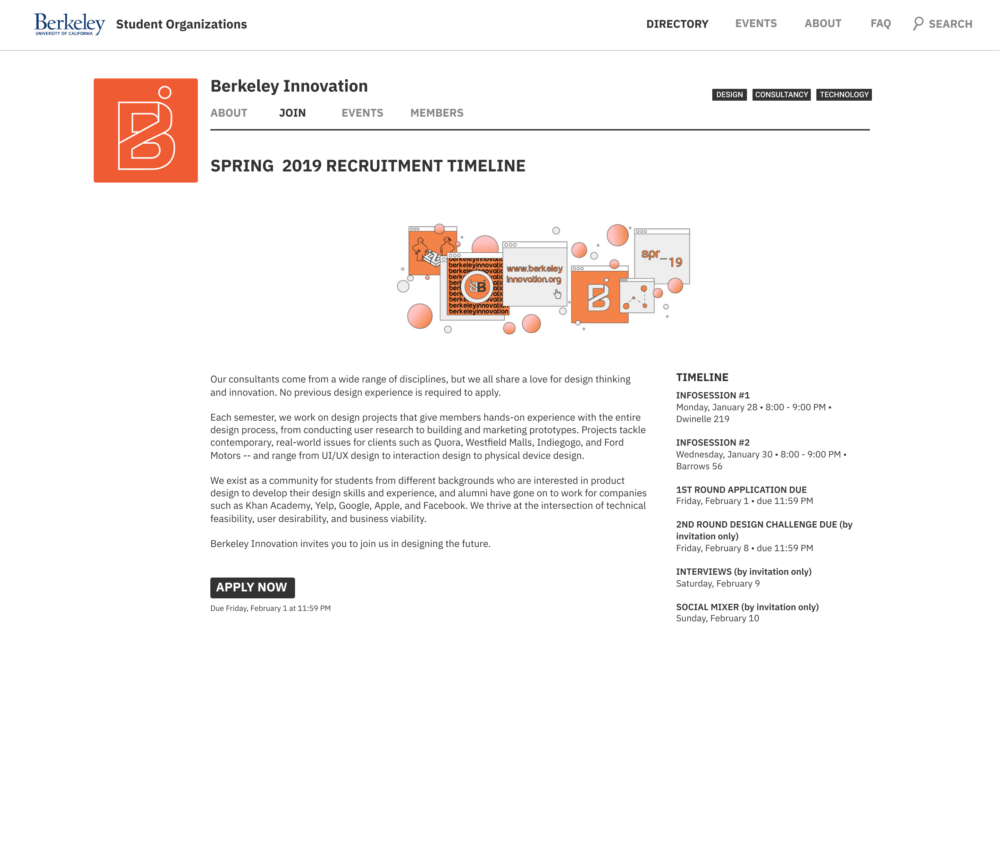

low fidelity

Initial sketches of the product.
Student Organization Platform
Matching students with campus organizations
context
The prompt for Google's 2019 design challenge was: Design an experience for new students to browse, search, and propose new student organizations. Provide your overall process, a wireframe flow, and one to two screens at higher fidelity.
research
I conducted three different research methods to motivate my designs:
Interviews
I spoke to 6 students at Calapalooza, my school’s spring club fair, which was the perfect place to learn about experiences with student orgs.
Surveys
I sent out an online survey and gathered 13 responses regarding different student’s experiences with finding and getting involved with student organizations.
Secondary Research
To get a better idea of existing student organization platforms, I began by analyzing platforms from different schools.
low fidelity
Initial sketches of the product.
mid fidelity

high fidelity

Homepage
Has all of the organizations with a picture, short blurb and up to three tags describing it. The search bar would open up in a column on the right with tags that you can filter by.
Organization Page
Contains its own four subpages with information about the organization itself, how to join, upcoming events, and a list of the current members.
Join Page
Contains all of the recruitment information, with an application link, timeline, and a header graphic.

Club Events Page
Contains all past and upcoming events by the organization.

General Events Page
Contains all the upcoming events from all organizations. If you click on search, the right column bar will open allowing you to filter by tag and interest.